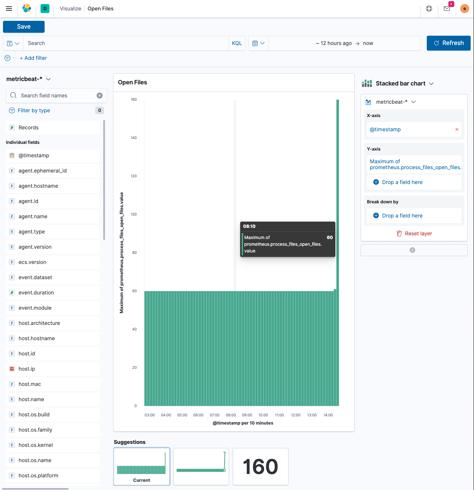

Monitor a Java applicationedit
In this tutorial, you’ll learn how to monitor a Java application using Elastic Observability: Logs, Metrics, APM, and Uptime.
What you’ll learnedit
You’ll learn how to:
- Create a sample Java application.
- Ingest logs using Filebeat and view your logs in Kibana.
- Ingest metrics using the Metricbeat Prometheus Module and view your metrics in Kibana.
- Instrument your application using the Elastic APM Java agent.
- Monitor your services using Heartbeat and view your uptime data in Kibana.
Before you beginedit
Create a deployment using our hosted Elasticsearch Service on Elastic Cloud. The deployment includes an Elasticsearch cluster for storing and searching your data, Kibana for visualizing and managing your data, and an APM server. For more information, see Spin up the Elastic Stack. If you do not want to follow all those steps listed here and take a look at the final java code, check out the observability-contrib github repository for the sample application.
Step 1: Create a Java applicationedit
To create the Java application, you require OpenJDK 14 (or higher) and the Javalin web framework. The application will include the main endpoint, an artificially long-running endpoint, and an endpoint that needs to poll another data source. There will also be a background job running.
-
Set up a Gradle project and create the following
build.gradlefile.plugins { id 'java' id 'application' } repositories { jcenter() } dependencies { implementation 'io.javalin:javalin:3.10.1' testImplementation 'org.junit.jupiter:junit-jupiter-api:5.6.2' testRuntimeOnly 'org.junit.jupiter:junit-jupiter-engine:5.6.2' } application { mainClassName = 'de.spinscale.javalin.App' } test { useJUnitPlatform() } -
Run the following command.
echo "rootProject.name = 'javalin-app'" >> settings.gradle mkdir -p src/main/java/de/spinscale/javalin mkdir -p src/test/java/de/spinscale/javalin
-
Install the Gradle wrapper. An easy way to install Gradle is to use
sdkman and run
sdk install gradle 6.5.1. Next rungradle wrapperin the current directory to install the gradle wrapper. -
Run
./gradlew clean check. You should see a successful build that has nothing built or compiled yet. -
To create a Javalin server and its first endpoint (the main endpoint), create the
src/main/java/de/spinscale/javalin/App.javafile.package de.spinscale.javalin; import io.javalin.Javalin; public class App { public static void main(String[] args) { Javalin app = Javalin.create().start(7000); app.get("/", ctx -> ctx.result("Appsolutely perfect")); } } -
Run
./gradlew assembleThis command compiled the
App.classfile in thebuilddirectory. However, there is no way to start the server. Let’s create a jar that contains our compiled class along with all the required dependencies. -
In the
build.gradlefile, editpluginsas shown here.plugins { id 'com.github.johnrengelman.shadow' version '6.0.0' id 'application' id 'java' } -
Run
./gradlew shadowJar. This command creates abuild/libs/javalin-app-all.jarfile.The
shadowJarplugin requires information about its main class. -
Add the following snippet to the
build.gradlefile.jar { manifest { attributes 'Main-Class': 'de.spinscale.javalin.App' } } -
Rebuild the project and start the server.
java -jar build/libs/javalin-app-all.jar
Open another terminal and run
curl localhost:7000to display an HTTP response. -
Test the code. Placing everything into the
main()method makes it difficult to test the code. However, a dedicated handler fixes this.Refactor the
Appclass.package de.spinscale.javalin; import io.javalin.Javalin; import io.javalin.http.Handler; public class App { public static void main(String[] args) { Javalin app = Javalin.create().start(7000); app.get("/", mainHandler()); } static Handler mainHandler() { return ctx -> ctx.result("Appsolutely perfect"); } }Add a Mockito and an Assertj dependency to the
build.gradlefile.dependencies { implementation 'io.javalin:javalin:3.10.1' testImplementation 'org.mockito:mockito-core:3.5.10' testImplementation 'org.assertj:assertj-core:3.17.2' testImplementation 'org.junit.jupiter:junit-jupiter-api:5.6.2' testRuntimeOnly 'org.junit.jupiter:junit-jupiter-engine:5.6.2' }Create an
AppTests.javaclass file insrc/test/java/de/spinscale/javalin.package de.spinscale.javalin; import io.javalin.http.Context; import org.junit.jupiter.api.Test; import javax.servlet.http.HttpServletRequest; import javax.servlet.http.HttpServletResponse; import java.io.IOException; import java.nio.charset.StandardCharsets; import java.util.HashMap; import static de.spinscale.javalin.App.mainHandler; import static org.assertj.core.api.Assertions.assertThat; import static org.mockito.Mockito.mock; public class AppTests { final HttpServletRequest req = mock(HttpServletRequest.class); final HttpServletResponse res = mock(HttpServletResponse.class); final Context ctx = new Context(req, res, new HashMap<>()); @Test public void testMainHandler() throws Exception { mainHandler().handle(ctx); String response = resultStreamToString(ctx); assertThat(response).isEqualTo("Appsolutely perfect"); } private String resultStreamToString(Context ctx) throws IOException { final byte[] bytes = ctx.resultStream().readAllBytes(); return new String(bytes, StandardCharsets.UTF_8); } } -
After the tests pass, build and package the application.
./gradlew clean check shadowJar
Step 2: Ingest logsedit
Logs can be events such as checkout, an exception, or an HTTP request. For this tutorial, let’s use log4j2 as our logging implementation.
Add logging implementationedit
-
Add the dependency to the
build.gradlefile.dependencies { implementation 'io.javalin:javalin:3.10.1' implementation 'org.apache.logging.log4j:log4j-slf4j18-impl:2.13.3' ... } -
To start logging, edit the
App.javafile and change a handler.The logger call must be within the lambda. Otherwise, the log message is logged only during startup.
package de.spinscale.javalin; import io.javalin.Javalin; import io.javalin.http.Handler; import org.slf4j.Logger; import org.slf4j.LoggerFactory; public class App { private static final Logger logger = LoggerFactory.getLogger(App.class); public static void main(String[] args) { Javalin app = Javalin.create(); app.get("/", mainHandler()); app.start(7000); } static Handler mainHandler() { return ctx -> { logger.info("This is an informative logging message, user agent [{}]", ctx.userAgent()); ctx.result("Appsolutely perfect"); }; } } -
Create a log4j2 configuration in the
src/main/resources/log4j2.xmlfile. You might need to create that directory first.<?xml version="1.0" encoding="UTF-8"?> <Configuration> <Appenders> <Console name="Console" target="SYSTEM_OUT"> <PatternLayout pattern="%d{HH:mm:ss.SSS} [%-5level] %logger{36} %msg%n"/> </Console> </Appenders> <Loggers> <Logger name="de.spinscale.javalin.App" level="INFO"/> <Root level="ERROR"> <AppenderRef ref="Console" /> </Root> </Loggers> </Configuration>By default, this logs on the
ERRORlevel. For theAppclass, there is an additional configuration so that allINFOlogs are also logged. After repackaging and restarting, the log messages are displayed in the terminal.17:17:40.019 [INFO ] de.spinscale.javalin.App - This is an informative logging message, user agent [curl/7.64.1]
Log requestsedit
Depending on the application traffic and whether it happens outside of the application, it makes sense to log each request on the application level.
-
In the
App.javafile, edit theAppclass.public class App { private static final Logger logger = LoggerFactory.getLogger(App.class); public static void main(String[] args) { Javalin app = Javalin.create(config -> { config.requestLogger((ctx, executionTimeMs) -> { logger.info("{} {} {} {} \"{}\" {}", ctx.method(), ctx.url(), ctx.req.getRemoteHost(), ctx.res.getStatus(), ctx.userAgent(), executionTimeMs.longValue()); }); }); app.get("/", mainHandler()); app.start(7000); } static Handler mainHandler() { return ctx -> { logger.info("This is an informative logging message, user agent [{}]", ctx.userAgent()); ctx.result("Appsolutely perfect"); }; } } -
Rebuild and restart the application. The log messages are logged for each request.
10:43:50.066 [INFO ] de.spinscale.javalin.App - GET / 200 0:0:0:0:0:0:0:1 "curl/7.64.1" 7
Create an ISO8601 timestampedit
Before ingesting logs into Elasticsearch Service, create an ISO8601 timestamp by editing the log4j2.xml file.
Creating an ISO8601 timestamp removes the need to do any calculation for timestamps when ingesting logs, as this is a unique point in time, including the timezone. Having a timezone becomes more important once you are running across data centers while trying to follow data streams.
<PatternLayout pattern="%d{ISO8601_OFFSET_DATE_TIME_HHCMM} [%-5level] %logger{36} %msg%n"/>
The log entries are ingested containing timestamps like the following.
2020-07-03T14:25:40,378+02:00 [INFO ] de.spinscale.javalin.App GET / 200 0:0:0:0:0:0:0:1 "curl/7.64.1" 0
Log to a file and stdoutedit
-
To read the logging output, let’s write data into a file and to stdout. This is a new
log4j2.xmlfile.<?xml version="1.0" encoding="UTF-8"?> <Configuration> <Appenders> <Console name="Console" target="SYSTEM_OUT"> <PatternLayout pattern="%highlight{%d{ISO8601_OFFSET_DATE_TIME_HHCMM} [%-5level] %logger{36} %msg%n}"/> </Console> <File name="JavalinAppLog" fileName="/tmp/javalin/app.log"> <PatternLayout pattern="%d{ISO8601_OFFSET_DATE_TIME_HHCMM} [%-5level] %logger{36} %msg%n"/> </File> </Appenders> <Loggers> <Logger name="de.spinscale.javalin.App" level="INFO"/> <Root level="ERROR"> <AppenderRef ref="Console" /> <AppenderRef ref="JavalinAppLog" /> </Root> </Loggers> </Configuration> -
Restart the application and send a request. The logs will be sent to
/tmp/javalin/app.log.
Install and configure Filebeatedit
To read the log file and send it to Elasticsearch, Filebeat is required. To download and install Filebeat, use the commands that work with your system:
curl -L -O https://artifacts.elastic.co/downloads/beats/filebeat/filebeat-7.12.0-amd64.deb sudo dpkg -i filebeat-7.12.0-amd64.deb
curl -L -O https://artifacts.elastic.co/downloads/beats/filebeat/filebeat-7.12.0-x86_64.rpm sudo rpm -vi filebeat-7.12.0-x86_64.rpm
curl -L -O https://artifacts.elastic.co/downloads/beats/filebeat/filebeat-7.12.0-darwin-x86_64.tar.gz tar xzvf filebeat-7.12.0-darwin-x86_64.tar.gz
brew tap elastic/tap brew install elastic/tap/filebeat-full
This command installs the most recently released default distribution of
Filebeat. To install the OSS distribution, specify
elastic/tap/filebeat-oss.
curl -L -O https://artifacts.elastic.co/downloads/beats/filebeat/filebeat-7.12.0-linux-x86_64.tar.gz tar xzvf filebeat-7.12.0-linux-x86_64.tar.gz
- Download the Filebeat Windows zip file from the downloads page.
-
Extract the contents of the zip file into
C:\Program Files. -
Rename the
filebeat-<version>-windowsdirectory toFilebeat. - Open a PowerShell prompt as an Administrator (right-click the PowerShell icon and select Run As Administrator).
-
From the PowerShell prompt, run the following commands to install Filebeat as a Windows service:
PS > cd 'C:\Program Files\Filebeat' PS C:\Program Files\Filebeat> .\install-service-filebeat.ps1
If script execution is disabled on your system, you need to set the
execution policy for the current session to allow the script to run. For
example:
PowerShell.exe -ExecutionPolicy UnRestricted -File .\install-service-filebeat.ps1.
-
Use the Filebeat keystore to store secure settings. Let’s store the Cloud ID in the keystore.
Substitute the Cloud ID from your deployment in the following command. To find your Cloud ID Click on your deployment in https://cloud.elastic.co/deployments
./filebeat keystore create echo -n "<Your Cloud ID>" | ./filebeat keystore add CLOUD_ID --stdin
To store logs in Elasticsearch with minimal permissions, create an API key to send data from Filebeat to Elasticsearch Service.
-
Log into Kibana user (you can do so from the Cloud Console without typing in any permissions) and select Management → Dev Tools. Send the following request:
POST /_security/api_key { "name": "filebeat_javalin-app", "role_descriptors": { "filebeat_writer": { "cluster": ["monitor", "read_ilm"], "index": [ { "names": ["filebeat-*"], "privileges": ["view_index_metadata", "create_doc"] } ] } } }The response contains an
api_keyand anidfield, which can be stored in the Filebeat keystore in the following format:id:api_key.echo -n "IhrJJHMB4JmIUAPLuM35:1GbfxhkMT8COBB4JWY3pvQ" | ./filebeat keystore add ES_API_KEY --stdin
Make sure you specify the
-nparameter; otherwise, you will have painful debugging sessions, because of adding a newline at the end of your API key.To see if both settings have been stored, run
./filebeat keystore list. -
To load the Filebeat dashboards, use the
elasticsuper user../filebeat setup -e -E 'cloud.id=${CLOUD_ID}' -E 'cloud.auth=elastic:YOUR_SUPER_SECRET_PASS'If you prefer not to store credentials in your shell’s
.historyfile, add a space at the beginning of the line. Depending on the shell configuration, these commands are not added to the history. -
Configure Filebeat, so it knows where to read data from and where to send it to. Create a
filebeat.ymlfile.name: javalin-app-shipper filebeat.inputs: - type: log paths: - /tmp/javalin/*.log cloud.id: ${CLOUD_ID} output.elasticsearch: api_key: ${ES_API_KEY}
Send data to Elasticsearchedit
To send data to Elasticsearch, start Filebeat.
sudo service filebeat start
If you use an init.d script to start Filebeat, you can’t specify command
line flags (see Command reference). To specify flags, start Filebeat in
the foreground.
Also see Filebeat and systemd.
sudo service filebeat start
If you use an init.d script to start Filebeat, you can’t specify command
line flags (see Command reference). To specify flags, start Filebeat in
the foreground.
Also see Filebeat and systemd.
./filebeat -e
To have launchd start elastic/tap/filebeat and then restart it at login,
run:
brew services start elastic/tap/filebeat-full
To run Filebeat in the foreground instead of running it as a background service, run:
filebeat -e
./filebeat -e
PS C:\Program Files\filebeat> Start-Service filebeat
By default, Windows log files are stored in C:\ProgramData\filebeat\Logs.
In the log output, you should see the following line.
2020-07-03T15:41:56.532+0200 INFO log/harvester.go:297 Harvester started for file: /tmp/javalin/app.log
Let’s create some log entries for the application. You can use a tool like wrk and run the following command to send requests to the application.
wrk -t1 -c 100 -d10s http://localhost:7000
This command results in roughly 8k requests per second, and the equivalent number of log lines are also written.
Step 3: View logs in Kibanaedit
-
Log into Kibana and select the Discover app.
There is a summary of the documents at the top, but let’s take a look at a single document.

You can see that a lot more data is indexed than just the event. There is information about the offset in the file, information about the component shipping the logs, the name of the shipper’s name in the output, and there is a
messagefield containing log line contents.You can see there is a flaw in the request logging. If the user agent is
null, something other thannullis returned. Reading our logs is crucial; however, just indexing them gains us nothing. To fix this, here is a new request logger.Javalin app = Javalin.create(config -> { config.requestLogger((ctx, executionTimeMs) -> { String userAgent = ctx.userAgent() != null ? ctx.userAgent() : "-"; logger.info("{} {} {} {} \"{}\" {}", ctx.method(), ctx.req.getPathInfo(), ctx.res.getStatus(), ctx.req.getRemoteHost(), userAgent, executionTimeMs.longValue()); }); });You may also want to fix this in the logging message in the main handler.
static Handler mainHandler() { return ctx -> { String userAgent = ctx.userAgent() != null ? ctx.userAgent() : "-"; logger.info("This is an informative logging message, user agent [{}]", userAgent); ctx.result("Appsolutely perfect"); }; } -
Now let’s have a look at the Logs app in Kibana. Select Observability → Logs.
If you want to see the streaming feature at work, run the following curl request in a loop while sleeping.
while $(sleep 0.7) ; do curl localhost:7000 ; done
-
To view a continuous stream of log messages, click Stream live. You can also highlight specific terms, as shown here.

Looking at one of the documents being indexed, you can see that the log message is contained in a single field. Verify this by looking at one of those documents.
GET filebeat-*/_search { "size": 1 }Things to note:
-
When you compare the
@timestampfield with the timestamp of the log message, you will notice that it differs. This means that you don’t get the results you expect when filtering based on the@timestampfield. The current@timestampfield reflects the timestamp when the event was created within Filebeat, not the timestamp of when the log event occurred in the application. - One cannot filter on specific fields like the HTTP verb, the HTTP status code, the log level or the class that generated the log message
-
When you compare the
Step 4: Work with your logsedit
Structure logsedit
To extract more data from a single log line into several fields requires additional structuring of the logs.
Let’s take another look at a log message generated by our app.
2020-07-03T15:45:01,479+02:00 [INFO ] de.spinscale.javalin.App This is an informative logging message
This message has four parts: timestamp, log level, class, and message. The
rules of splitting are apparent as well, as most of them involve
white space.
The good news is that all Beats can process a logline before sending it to Elasticsearch by using processors. If the capabilities of these processors are not enough, you can always let Elasticsearch do the heavy lifting by using an ingest node. This is what many modules in Filebeat do. A module in Filebeat is a way to parse a specific log file format for a particular software.
Let’s try this by using a couple of processors and only a Filebeat configuration.
processors:
- add_host_metadata: ~
- dissect:
tokenizer: '%{timestamp} [%{log.level}] %{log.logger} %{message_content}'
field: "message"
target_prefix: ""
- timestamp:
field: "timestamp"
layouts:
- '2006-01-02T15:04:05.999Z0700'
test:
- '2020-07-18T04:59:51.123+0200'
- drop_fields:
fields: [ "message", "timestamp" ]
- rename:
fields:
- from: "message_content"
- to: "message"
The dissect processor splits the log message into four parts. If you want
to have the last part of the original message in the message field,
you need to remove the old message field first and then rename the field.
There is no in-place replacement with the dissect filter.
There is also a dedicated timestamp parsing so that the @timestamp
field contains a parsed value. Drop the duplicated
fields, but ensure that a part of the original message is still
available in the message field.
The removal of parts of the original message is debatable. Keeping the original message around makes a lot of sense to me. With the above example, debugging might become problematic if parsing the timestamp does not work as expected.
There is also a slight difference in the parsing of a timestamp as the go time parser only accepts dots as a separator between seconds and milliseconds. Still, our default output of the log4j2 is using a comma.
Either one can fix the timestamp in the logging output to look like one expected from Filebeat. This results in the following pattern layout.
<PatternLayout pattern="%d{yyyy-MM-dd'T'HH:mm:ss.SSSZ} [%-5level] %logger{36} %msg%n"/>
Fixing the timestamp parsing is another way, as you do not always have full control over your logs and change their format. Imagine using some third-party software. For now, this will be good enough.
Restart Filebeat after the change, and look at what changed in an indexed JSON document by running this search (and having another log message indexed).
GET filebeat-*/_search?filter_path=**._source
{
"size": 1,
"_source": {
"excludes": [
"host.ip",
"host.mac"
]
},
"sort": [
{
"@timestamp": {
"order": "desc"
}
}
]
}
This returns a document like this.
{
"hits" : {
"hits" : [
{
"_source" : {
"input" : {
"type" : "log"
},
"agent" : {
"hostname" : "rhincodon",
"name" : "javalin-app-shipper",
"id" : "95705f0c-b472-4bcc-8b01-2d387c0d309b",
"type" : "filebeat",
"ephemeral_id" : "e4df883f-6073-4a90-a4c4-9e116704f871",
"version" : "7.9.0"
},
"@timestamp" : "2020-07-03T15:11:51.925Z",
"ecs" : {
"version" : "1.5.0"
},
"log" : {
"file" : {
"path" : "/tmp/javalin/app.log"
},
"offset" : 1440,
"level" : "ERROR",
"logger" : "de.spinscale.javalin.App"
},
"host" : {
"hostname" : "rhincodon",
"os" : {
"build" : "19F101",
"kernel" : "19.5.0",
"name" : "Mac OS X",
"family" : "darwin",
"version" : "10.15.5",
"platform" : "darwin"
},
"name" : "javalin-app-shipper",
"id" : "C28736BF-0EB3-5A04-BE85-C27A62C99316",
"architecture" : "x86_64"
},
"message" : "This is an informative logging message, user agent [curl/7.64.1]"
}
}
]
}
}
You can see that the message field only contains the last part of our log
message. Also, there is a log.level and log.logger field.
When the log level is INFO, it is logged with
additional space at the end. You could use a
script
processor and call trim(). However, it might be easier to fix our logging
configuration to not always emit 5 characters, regardless of
the log level length. You can still keep this when writing to standard out.
<File name="JavalinAppLog" fileName="/tmp/javalin/app.log">
<PatternLayout pattern="%d{yyyy-MM-dd'T'HH:mm:ss.SSSZ} [%level] %logger{36} %msg%n"/>
</File>
Parse exceptionsedit
Exceptions are a special treat in the case of logging. They span multiple lines, so the old rule of one message per line does not exist in exceptions.
Add an endpoint in App.java that triggers an exception first and make sure it
is logged by using an exception mapper.
app.get("/exception", ctx -> {
throw new IllegalArgumentException("not yet implemented");
});
app.exception(Exception.class, (e, ctx) -> {
logger.error("Exception found", e);
ctx.status(500).result(e.getMessage());
});
Calling /exception returns an HTTP 500 error to the client, but
it leaves a stack trace in the logs like this.
2020-07-06T11:27:29,491+02:00 [ERROR] de.spinscale.javalin.App Exception found
java.lang.IllegalArgumentException: not yet implemented
at de.spinscale.javalin.App.lambda$main$2(App.java:24) ~[classes/:?]
at io.javalin.core.security.SecurityUtil.noopAccessManager(SecurityUtil.kt:23) ~[javalin-3.10.1.jar:?]
at io.javalin.http.JavalinServlet$addHandler$protectedHandler$1.handle(JavalinServlet.kt:119) ~[javalin-3.10.1.jar:?]
at io.javalin.http.JavalinServlet$service$2$1.invoke(JavalinServlet.kt:45) ~[javalin-3.10.1.jar:?]
at io.javalin.http.JavalinServlet$service$2$1.invoke(JavalinServlet.kt:24) ~[javalin-3.10.1.jar:?]
... goes on and on and on and own ...
There is one attribute that helps to parse this stack trace. It seems different compared to a regular log message. Each new line starts with white space, thus different from a log message beginning with the date. Let’s add this logic to our Beats configuration.
- type: log
enabled: true
paths:
- /tmp/javalin/*.log
multiline.pattern: ^20
multiline.negate: true
multiline.match: after
So the verbatim translation of the above settings says to treat everything
as part of an existing message, that is not starting with 20 in a line.
The 20 resembles the beginning year of your timestamps. Some users
prefer to wrap the date in [] to make this easier to understand.
This introduces state into your logging. You cannot split a log file among several processors now, as every log line could still be belonging to the current event. This is not a bad thing, but again something to be aware of.
After restarting Filebeat and your Javalin app, trigger an
exception, and you will see a long stack trace in the message field of
your logs.
Configure log rotationedit
To ensure that logs don’t grow infinitely, let’s add some log rotation to your logging configuration.
<?xml version="1.0" encoding="UTF-8"?>
<Configuration>
<Appenders>
<Console name="Console" target="SYSTEM_OUT">
<PatternLayout pattern="%highlight{%d{ISO8601_OFFSET_DATE_TIME_HHCMM} [%-5level] %logger{36} %msg%n}"/>
</Console>
<RollingFile name="JavalinAppLogRolling" fileName="/tmp/javalin/app.log" filePattern="/tmp/javalin/%d{yyyy-MM-dd}-%i.log.gz">
<PatternLayout pattern="%d{yyyy-MM-dd'T'HH:mm:ss.SSSZ} [%level] %logger{36} %msg%n"/>
<Policies>
<TimeBasedTriggeringPolicy />
<SizeBasedTriggeringPolicy size="50 MB"/>
</Policies>
<DefaultRolloverStrategy max="20"/>
</RollingFile>
</Appenders>
<Loggers>
<Logger name="de.spinscale.javalin.App" level="INFO"/>
<Root level="ERROR">
<AppenderRef ref="Console" />
<AppenderRef ref="JavalinAppLogRolling" />
</Root>
</Loggers>
</Configuration>
The sample added a JavalinAppLogRolling appender to our configuration that
uses the same logging pattern as before, but rolls over if a new day
starts or if the log file has reached 50 megabytes.
If a new log file is created, older log files are gzipped as well to take less space on disk. The size of 50 megabytes refers to the unpacked file size, so the potentially twenty files on disk will be much smaller each.
Ingest nodeedit
The built-in modules are almost entirely using the Ingest node feature of Elasticsearch instead of the Beats processors.
One of the most helpful parts of the ingest pipeline is the ability to debug by using the Simulate Pipeline API.
-
Let’s write a pipeline that is similar to our Filebeat processors using the Dev Tools panel in Kibana, run the following:
# Store the pipeline in Elasticsearch PUT _ingest/pipeline/javalin_pipeline { "processors": [ { "dissect": { "field": "message", "pattern": "%{@timestamp} [%{log.level}] %{log.logger} %{message}" } }, { "trim": { "field": "log.level" } }, { "date": { "field": "@timestamp", "formats": [ "ISO8601" ] } } ] } # Test the pipeline POST _ingest/pipeline/javalin_pipeline/_simulate { "docs": [ { "_source": { "message": "2020-07-06T13:39:51,737+02:00 [INFO ] de.spinscale.javalin.App This is an informative logging message" } } ] }You can see the pipeline’s created fields in the output, which now looks like the earlier Filebeat processors. As the ingest pipeline works on a document level, you still need to check for exceptions where the logs are generated and let Filebeat create a single message out of that. You could even implement the log level trimming with a single processor, and date parsing was also pretty easy, as the Elasticsearch ISO8601 parser correctly identifies a comma instead of a dot when splitting seconds and milliseconds.
-
Now, on to the Filebeat configuration. First, let’s remove all the processors, except the add_host_metadata processor, to add some host information like the host name and operating system.
processors: - add_host_metadata: ~
-
Edit the Elasticsearch output to ensure the pipeline will be referred to when a document is indexed from Filebeat.
cloud.id: ${CLOUD_ID} output.elasticsearch: api_key: ${ES_API_KEY} pipeline: javalin_pipeline - Restart Filebeat and see if logs are flowing in as expected.
Write logs as JSONedit
You have now learned about parsing logs in either Beats or Elasticsearch. What if we didn’t need to think about parsing our logs and extract data manually?
Writing out logs as plain text works and is easy to read for humans.
However, first writing them out as plain text, parsing them using
the dissect processors, and then creating a JSON again sounds tedious and burns
unneeded CPU cycles.
While log4j2 has a JSONLayout, you can go further and use a Library called ecs-logging-java. The advantage of ECS logging is that it uses the Elastic Common Schema. ECS defines a standard set of fields used when storing event data in Elasticsearch, such as logs and metrics.
-
Instead of writing our logging standard, use an existing one. Let’s add the logging dependency to our Javalin application.
dependencies { implementation 'io.javalin:javalin:3.10.1' implementation 'org.apache.logging.log4j:log4j-slf4j18-impl:2.13.3' implementation 'co.elastic.logging:log4j2-ecs-layout:0.5.0' testImplementation 'org.mockito:mockito-core:3.5.10' testImplementation 'org.assertj:assertj-core:3.17.2' testImplementation 'org.junit.jupiter:junit-jupiter-api:5.6.2' testRuntimeOnly 'org.junit.jupiter:junit-jupiter-engine:5.6.2' } // this is needed to ensure JSON logging works as expected when building // a shadow jar shadowJar { transform(com.github.jengelman.gradle.plugins.shadow.transformers.Log4j2PluginsCacheFileTransformer) }The log4j2-ecs-layout ships with a custom
<EcsLayout>which can be used in the logging setup for the rolling file appender<RollingFile name="JavalinAppLogRolling" fileName="/tmp/javalin/app.log" filePattern="/tmp/javalin/%d{yyyy-MM-dd}-%i.log.gz"> <EcsLayout serviceName="my-javalin-app"/> <Policies> <TimeBasedTriggeringPolicy /> <SizeBasedTriggeringPolicy size="50 MB"/> </Policies> <DefaultRolloverStrategy max="20"/> </RollingFile>When you restart your app, you will see pure JSON written to your log file. When you trigger an exception, you will see, that the stack trace is already within your single document. This means the Filebeat configuration can become stateless and even more lightweight. Also, the ingest pipeline on the Elasticsearch side can be deleted again.
-
You can configure a few more parameters for the
EcsLayout, but the defaults have been selected wisely. Let’s fix the Filebeat configuration and remove the multiline setup along with pipeline:filebeat.inputs: - type: log enabled: true paths: - /tmp/javalin/*.log json.keys_under_root: true name: javalin-app-shipper cloud.id: ${CLOUD_ID} output.elasticsearch: api_key: ${ES_API_KEY} # ================================= Processors ================================= processors: - add_host_metadata: ~As you can see, just by writing out logs as JSON, our whole logging setup got a ton easier, so whenever possible, try to directly write your logs as JSON.
Step 5: Ingest metricsedit
A metric is considered a point in time value that can change anytime. The number of current requests can change any millisecond. You could have a spike of 1000 requests, and then everything goes back to one request. This also means that these kinds of metrics may not be accurate, and you also want to pull min/max values to get some more indication. Furthermore, this implies that you need to think about the duration of those metrics as well. Do you need those once per minute or every 10 seconds?
To get a different angled view of your application, let’s ingest some metrics. In this example, we will use the Metricbeat Prometheus Module to send data to Elasticsearch.
The underlying library used in our app is micrometer.io, a vendor-neutral application metrics facade in combination with its Prometheus support to implement a pull-based model. You could use the elastic support to achieve a push-based model. This would require users to store credential data of the Elasticsearch cluster in our app. This example keeps this data in the surrounding tools.
Add metrics to the applicationedit
-
Add the dependencies to our
build.gradlefile.// metrics via micrometer implementation 'io.micrometer:micrometer-core:1.5.4' implementation 'io.micrometer:micrometer-registry-prometheus:1.5.4' implementation 'org.apache.commons:commons-lang3:3.11'
-
Add the micrometer plugin and its corresponding import to our Javalin app.
... import io.javalin.plugin.metrics.MicrometerPlugin; import io.javalin.core.security.BasicAuthCredentials; ... Javalin app = Javalin.create(config -> { ... config.registerPlugin(new MicrometerPlugin()); ); -
Add a new metrics endpoint and ensure the
BasicAuthCredentialsclass is imported as well.final Micrometer micrometer = new Micrometer(); app.get("/metrics", ctx -> { ctx.status(404); if (ctx.basicAuthCredentialsExist()) { final BasicAuthCredentials credentials = ctx.basicAuthCredentials(); if ("metrics".equals(credentials.getUsername()) && "secret".equals(credentials.getPassword())) { ctx.status(200).result(micrometer.scrape()); } } });Here, the
MicroMeterclass is a self-written class namedMicroMeter.javathat sets up a couple of metrics monitors and creates the registry for Prometheus, which provides the text-based Prometheus output.package de.spinscale.javalin; import io.micrometer.core.instrument.Metrics; import io.micrometer.core.instrument.binder.jvm.JvmCompilationMetrics; import io.micrometer.core.instrument.binder.jvm.JvmGcMetrics; import io.micrometer.core.instrument.binder.jvm.JvmHeapPressureMetrics; import io.micrometer.core.instrument.binder.jvm.JvmMemoryMetrics; import io.micrometer.core.instrument.binder.jvm.JvmThreadMetrics; import io.micrometer.core.instrument.binder.logging.Log4j2Metrics; import io.micrometer.core.instrument.binder.system.FileDescriptorMetrics; import io.micrometer.core.instrument.binder.system.ProcessorMetrics; import io.micrometer.core.instrument.binder.system.UptimeMetrics; import io.micrometer.prometheus.PrometheusConfig; import io.micrometer.prometheus.PrometheusMeterRegistry; public class Micrometer { final PrometheusMeterRegistry registry = new PrometheusMeterRegistry(new PrometheusConfig() { @Override public String get(String key) { return null; } @Override public String prefix() { return "javalin"; } }); public Micrometer() { Metrics.addRegistry(registry); new JvmGcMetrics().bindTo(Metrics.globalRegistry); new JvmHeapPressureMetrics().bindTo(Metrics.globalRegistry); new JvmThreadMetrics().bindTo(Metrics.globalRegistry); new JvmCompilationMetrics().bindTo(Metrics.globalRegistry); new JvmMemoryMetrics().bindTo(Metrics.globalRegistry); new Log4j2Metrics().bindTo(Metrics.globalRegistry); new UptimeMetrics().bindTo(Metrics.globalRegistry); new FileDescriptorMetrics().bindTo(Metrics.globalRegistry); new ProcessorMetrics().bindTo(Metrics.globalRegistry); } public String scrape() { return registry.scrape(); } } -
Rebuild your app and poll the metrics endpoint.
curl localhost:7000/metrics -u metrics:secret
This returns a line based response with one metric per line. This is the standard Prometheus format.
Install and configure Metricbeatedit
To send metrics to Elasticsearch, Metricbeat is required. To download and install Metricbeat, use the commands that work with your system:
curl -L -O https://artifacts.elastic.co/downloads/beats/metricbeat/metricbeat-7.12.0-amd64.deb sudo dpkg -i metricbeat-7.12.0-amd64.deb
curl -L -O https://artifacts.elastic.co/downloads/beats/metricbeat/metricbeat-7.12.0-x86_64.rpm sudo rpm -vi metricbeat-7.12.0-x86_64.rpm
curl -L -O https://artifacts.elastic.co/downloads/beats/metricbeat/metricbeat-7.12.0-darwin-x86_64.tar.gz tar xzvf metricbeat-7.12.0-darwin-x86_64.tar.gz
brew tap elastic/tap brew install elastic/tap/metricbeat-full
This command installs the most recently released default distribution of
Metricbeat. To install the OSS distribution, specify
elastic/tap/metricbeat-oss.
curl -L -O https://artifacts.elastic.co/downloads/beats/metricbeat/metricbeat-7.12.0-linux-x86_64.tar.gz tar xzvf metricbeat-7.12.0-linux-x86_64.tar.gz
- Download the Metricbeat Windows zip file from the downloads page.
-
Extract the contents of the zip file into
C:\Program Files. -
Rename the
metricbeat-<version>-windowsdirectory toMetricbeat. - Open a PowerShell prompt as an Administrator (right-click the PowerShell icon and select Run As Administrator).
-
From the PowerShell prompt, run the following commands to install Metricbeat as a Windows service:
PS > cd 'C:\Program Files\Metricbeat' PS C:\Program Files\Metricbeat> .\install-service-metricbeat.ps1
If script execution is disabled on your system, you need to set the
execution policy for the current session to allow the script to run. For
example:
PowerShell.exe -ExecutionPolicy UnRestricted -File .\install-service-metricbeat.ps1.
-
Similar to the Filebeat setup, run the initial set up of all the dashboards using the admin user, and then use an API key.
POST /_security/api_key { "name": "metricbeat_javalin-app", "role_descriptors": { "metricbeat_writer": { "cluster": ["monitor", "read_ilm"], "index": [ { "names": ["metricbeat-*"], "privileges": ["view_index_metadata", "create_doc"] } ] } } } -
Store the combination of
idandapi_keyfields in the keystore../metricbeat keystore create echo -n "IhrJJHMB4JmIUAPLuM35:1GbfxhkMT8COBB4JWY3pvQ" | ./metricbeat keystore add ES_API_KEY --stdin echo -n "observability-javalin-app:ZXUtY2VudHJhbC0xLmF3cy5jbG91ZC5lcy5pbyQ4NDU5M2I1YmQzYTY0N2NhYjA2MWQ3NTJhZWFhNWEzYyQzYmQwMWE2OTQ2MmQ0N2ExYjdhYTkwMzI0YjJiOTMyYQ==" | ./metricbeat keystore add CLOUD_ID --stdin
Don’t forget to do the initial setup like this.
./metricbeat setup -e -E 'cloud.id=${CLOUD_ID}' -E 'cloud.auth=elastic:YOUR_SUPER_SECRET_PASS' -
Configure Metricbeat to read our Prometheus metrics. Start with a basic
metricbeat.yaml.metricbeat.config.modules: path: ${path.config}/modules.d/*.yml reload.enabled: false name: javalin-metrics-shipper cloud.id: ${CLOUD_ID} output.elasticsearch: api_key: ${ES_API_KEY} processors: - add_host_metadata: ~ - add_cloud_metadata: ~ - add_docker_metadata: ~ - add_kubernetes_metadata: ~As Metricbeat supports dozens of modules, which in turn are different ways of ingesting metrics (the same applies to Filebeat with different types of log files and formats), the Prometheus module needs to be enabled.
./metricbeat modules enable prometheus
Add the Prometheus endpoint to poll in
./modules.d/prometheus.yml:- module: prometheus period: 10s hosts: ["localhost:7000"] metrics_path: /metrics username: "metrics" password: "secret" use_types: true rate_counters: true
- To improve security, you should add the username and the password to the keystore and refer to both in the configuration.
- Start Metricbeat.
sudo service metricbeat start
If you use an init.d script to start Metricbeat, you can’t specify command
line flags (see Command reference). To specify flags, start Metricbeat in
the foreground.
Also see Metricbeat and systemd.
sudo service metricbeat start
If you use an init.d script to start Metricbeat, you can’t specify command
line flags (see Command reference). To specify flags, start Metricbeat in
the foreground.
Also see Metricbeat and systemd.
|
You’ll be running Metricbeat as root, so you need to change ownership
of the configuration file, or run Metricbeat with |
To have launchd start elastic/tap/metricbeat and then restart it at login,
run:
brew services start elastic/tap/metricbeat-full
To run Metricbeat in the foreground instead of running it as a background service, run:
metricbeat -e
|
You’ll be running Metricbeat as root, so you need to change ownership
of the configuration file, or run Metricbeat with |
PS C:\Program Files\metricbeat> Start-Service metricbeat
By default, Windows log files are stored in C:\ProgramData\metricbeat\Logs.
On Windows, statistics about system load and swap usage are currently not captured
Verify that the Prometheus events are flowing into Elasticsearch.
GET metricbeat-*/_search?filter_path=**.prometheus,hits.total
{
"query": {
"term": {
"event.module": "prometheus"
}
}
}
Step 6: View metrics in Kibanaedit
As this is custom data from our Javalin app, there is no pre-defined dashboard for displaying this data.
Let’s check for the number of logging messages per log level.
GET metricbeat-*/_search
{
"query": {
"exists": {
"field": "prometheus.log4j2_events_total.counter"
}
}
}
Visualize the number of log messages over time, split by the
log level. Since the Elastic Stack 7.7, there is a new way of creating a
visualization called Lens.
- Log into Kibana and select Visualize → Create Visualization.
-
Create a line chart and select
metricbeat-*as the source.The basic idea is to have a max aggregation on the y-axis on the
prometheus.log4j2_events_total.ratefield, whereas the x-axis, is split by date using a date_histogram aggregation on the@timestampfield.There is one more split within each date histogram bucket, split by log level, using a terms aggregation on the
prometheus.labels.level, which contains the log level. Also, increase the size of the log level to six to display every log level.The final result looks like this.

Visualize open files over timeedit
The second visualization is to be a check for the number of open files in our application.
As no one can remember all the field names, let’s again look at the metrics output again first.
curl -s localhost:7000/metrics -u metrics:secret | grep ^process process_files_max_files 10240.0 process_cpu_usage 1.8120711232436825E-4 process_uptime_seconds 72903.726 process_start_time_seconds 1.594048883317E9 process_files_open_files 61.0
Let’s look at the process_files_open_files metric. This should be a rather static value that rarely changes.
If you run an application which stores data within the JVM or opens and closes network
sockets, this metric increases and decreases depending on the load. With a web application,
this is rather static. Let’s figure out why there are 60 files open on our
small web application.
-
Run
jpsthat will contain your App in the process list.$ jps 14224 Jps 82437 Launcher 82438 App 40895
-
Use
lsofon that process.$ lsof -p 82438
You will see more output than just all the files being opened, as a file is also a TCP connection happening right now.
-
Add an endpoint to increase the number of open files by having long-running HTTP connections (each connection is also considered an open file as it requires a file descriptor), and then run
wrkagainst it.... import java.util.concurrent.CompletableFuture; import java.util.concurrent.Executor; import java.util.concurrent.TimeUnit; ... public static void main(String[] args) { ... final Executor executor = CompletableFuture.delayedExecutor(20, TimeUnit.SECONDS); app.get("/wait", ctx -> { CompletableFuture<String> future = CompletableFuture.supplyAsync(() -> "done", executor); ctx.result(future); }); ...Every future gets delayed by 20 seconds, which means that a single HTTP request stays open for 20 seconds.
-
Let’s run a
wrkworkload.wrk -c 100 -t 20 -d 5m http://localhost:7000/wait
Results show that only twenty requests were sent, which makes sense given the processing time.
Now let’s build a visualization using Lens in Kibana.

-
Below
Add filter, select themetricbeat-*index pattern. This will likely usefilebeat-*as the default.The x-axis uses the
@timestampfield - which in turn will create adate_histogramaggregation again. The y-axis should not be the document count, as that one will always be stable, but the maximum value of the documents in the buckets. Click on the right of the field name on the y-axis and selectMax. This gives you a similar visualization than shown, with a peak where you ran thewrkcommand above. -
Now let’s have a look at the Metrics app in Kibana. Select Observability → Metrics.
You will only see data from a single shipper. Still, the moment you are running several services and the ability to group this per Kubernetes pod or host enables you to spot hosts with elevated CPU or memory consumption.
-
Click Metrics Explorer, you can start exploring your data for specific hosts or the CPU usage across your nodes.

This is an area chart of the total events counter the Javalin app emits. It’s rising because there is a component polling an endpoint that, in turn, produces another log message. The steeper peek was due to sending more requests. But where is the sudden drop-off coming from? A JVM restart. As those metrics are not persisted, they reset on a JVM restart. With that in mind, it’s often better to log the
rateinstead of thecounterfield.
Step 7: Instrument the applicationedit
The third piece of Observability is Application Performance Management (APM). An APM setup consists of an APM server which accepts the data (and is already running within our Elastic Cloud setup) and an agent delivering the data to the server.
The agent has two tasks: instrumenting the Java application to extract application performance information and sending that data to the APM Server.
One of the APM’s core ideas is the ability to follow the flow of a user session across your whole stack, regardless of whether you have dozens of microservices or a monolith answering your user requests. This implies the ability to tag a request across your entire stack.
To fully capture user activity, you need to start in the browser of the user using Real User Monitoring (RUM) down to your application, which sends a SQL query to your database.
Data Modeledit
Despite a heavily fragmented APM landscape, the terminology often is similar. The two most important terms are Spans and Transactions.
A transaction encapsulates a series of spans, which contain information about the execution of a piece of code. Let’s take a look at this screenshot from the Kibana APM app.

This is a Spring Boot application. The
UserProfileController.showProfile() method is called, which is marked as the
transaction. There are two spans within. First, a request is sent to
Elasticsearch using the Elasticsearch REST client, and after the
response is rendered using Thymeleaf. The request to Elasticsearch is faster than the
rendering in this case.
The Java APM agent can instrument specific frameworks automatically. Spring and Spring Boot are supported well, and the above data was created by adding the agent to the Spring Boot application; there is no configuration necessary.
There are currently agents for Go, .NET, Node, Python, Ruby, and the browser (RUM). Agents keep getting added so you may want to check the APM agent documentation.
Add the APM agent to your codeedit
You have two options to add Java agent instrumentation to your application.
First, you can add the agent via a parameter when calling the java
binary. This way, it does not interfere with the packaging of the
application. This mechanism instruments the application when starting
up.
First, download the agent, you can check for the most recent version.
wget https://repo1.maven.org/maven2/co/elastic/apm/elastic-apm-agent/1.17.0/elastic-apm-agent-1.17.0.jar
Specify the agent on startup as well as the configuration parameters of where to send the APM data to. Before starting the Java application, let’s get an API key for our APM server running in Elastic Cloud.
When you check your deployment in Elastic Cloud and click on APM on
the left, you will see the APM Server Secret Token, which you can use.
Also you can copy the APM endpoint URL from there.
java -javaagent:/path/to/elastic-apm-agent-1.17.0.jar\ -Delastic.apm.service_name=javalin-app \ -Delastic.apm.application_packages=de.spinscale.javalin \ -Delastic.apm.server_urls=$APM_ENDPOINT_URL \ -Delastic.apm.secret_token=PqWTHGtHZS2i0ZuBol \ -jar build/libs/javalin-app-all.jar
You could now go ahead and open up the APM UI and you should see the data flowing in.
Automatic attachmentedit
If you do not want to change the startup options of your application, the standalone agent allows you to attach to running JVMs on a host.
This requires you to download the standalone jar. You can find the link on the official docs.
To list your locally running java application, you can run
java -jar /path/to/apm-agent-attach-1.17.0-standalone.jar --list
As I usually run more than a single java app on my system, I specify the application to attach to. Also, make sure, that you have stopped your Javalin application with the agent already attached and just start a regular Javalin app without the agent configured to attach.
java -jar /tmp/apm-agent-attach-1.17.0-standalone.jar --pid 30730 \ --config service_name=javalin-app \ --config application_packages=de.spinscale.javalin \ --config server_urls=$APM_ENDPOINT_URL \ --config secret_token=PqWTHGtHZS2i0ZuBol
This above message will return something like this:
2020-07-10 15:04:48.144 INFO Attaching the Elastic APM agent to 30730 2020-07-10 15:04:49.649 INFO Done
So now the agent was attached to a running application with a special configuration.
While both of the first two possibilities work, you can also use the third one: using the APM agent as a direct dependency. This allows you to write custom spans and transactions within our application.
Programmatic setupedit
A programmatic setup allows you to attach the agent via a line of java in your source code.
-
Add the java agent dependency.
dependencies { ... implementation 'co.elastic.apm:apm-agent-attach:1.17.0' ... } -
Instrument the application right at the start in our
main()method.import co.elastic.apm.attach.ElasticApmAttacher; ... public static void main(String[] args) { ElasticApmAttacher.attach(); ... }We did not configure any endpoint or API tokens yet. While the documentation recommends using the
src/main/resources/elasticapm.propertiesfile, I prefer the use of environment variables, as this prevents either committing API tokens to your source or merging another repository. Mechanisms like vault allow you to manage your secrets in such a way.For our local deployment, I usually use something like direnv for local setup.
direnvis an extension for your local shell that loads/unloads environment variables when you enter a directory, like your application.direnvcan do quite a bit more like loading the right node/ruby version or adding a directory to your $PATH variable. -
To enable
direnv, you need to create a.envrcfile with this.dotenv
This tells
direnvto load the contents of the.envfile as environment variables. The.envfile should look like this:ELASTIC_APM_SERVICE_NAME=javalin-app ELASTIC_APM_SERVER_URLS=https://APM_ENDPOINT_URL ELASTIC_APM_SECRET_TOKEN=PqWTHGtHZS2i0ZuBol
If you are not comfortable with putting sensitive data in that
.envfile, you can use tools like envchain or call arbitrary commands in the.envrcfile like accessing Vault. -
You can now run the java application as you did before.
java -jar build/libs/javalin-app-all.jar
If you want to run this in your IDE, you can either set the environment variables manually or search for a plugin that supports
.envfiles.Wait a few minutes and let’s finally take a look at the APM app.

As you can see, this is quite the difference to the Spring Boot application shown earlier. The different endpoints are not listed; we can see the requests per minute though including errors.
The only transaction comes from a single servlet, which is not too helpful. Let’s try to fix this by introducing custom programmatic transactions.
Custom transactionsedit
-
Add another dependency.
dependencies { ... implementation 'co.elastic.apm:apm-agent-attach:1.17.0' implementation 'co.elastic.apm:apm-agent-api:1.17.0' ... } -
Fix the name of the transactions to include the HTTP method and the request path
app.before(ctx -> ElasticApm.currentTransaction() .setName(ctx.method() + " " + ctx.path()));
-
Restart your app and see data flowing in. Test a few different endpoints, especially the one that throws exceptions and the one that triggers a 404.

This looks much better, having differences between endpoints.
-
Add another endpoint to see the power of transactions, which polls another HTTP service. You may have heard of wttr.in, a service to poll weather information from. Let’s implement a proxy HTTP method that forwards the request to that endpoint. Let’s use Apache HTTP client, one of the most typical HTTP clients out there.
implementation 'org.apache.httpcomponents:fluent-hc:4.5.12'
This is our new endpoint.
import org.apache.http.client.fluent.Request; ... public static void main(String[] args) { ... app.get("/weather/:city", ctx -> { String city = ctx.pathParam("city"); ctx.result(Request.Get("https://wttr.in/" + city + "?format=3").execute() .returnContent().asBytes()) .contentType("text/plain; charset=utf-8"); }); ... -
Curl
http://localhost:7000/weather/Munichand see a one-line response about the current weather. Let’s check the APM UI.In the overview, you can see that most time is spent in the HTTP client, which is not surprising.

Our transactions for the
/weather/Munichnow contain a span, showing how much time is spent on retrieving the weather data. Because the HTTP client is instrumented automatically, there is no need to do anything.
If the
cityparameter if that URL is of high cardinality, this will result in a high amount of URLs mentioned instead of the generic endpoint. If you would like to prevent this, a possibility would be to usectx.matchedPath()to log every call to the weather API asGET /weather/:city. This however requires some refactoring by removing theapp.before()handler and replacing it with aapp.after()handler.app.after(ctx -> ElasticApm.currentTransaction().setName(ctx.method() + " " + ctx.endpointHandlerPath()));
Method tracing via agent configurationedit
Instead of writing code to trace methods, you can also configure the agent to do this. Let’s try to figure out if logging is a bottleneck for our application and trace the request logger statements we added earlier.
The agent can trace methods based on their signature.
The interface to monitor would be the io.javalin.http.RequestLogger
interface with the handle method. So let’s try
io.javalin.http.RequestLogger#handle to identify the method to log
and put this in your .env.
ELASTIC_APM_TRACE_METHODS="de.spinscale.javalin.Log4j2RequestLogger#handle"
-
Create a dedicated logger class as well to match the above trace method.
package de.spinscale.javalin; import io.javalin.http.Context; import io.javalin.http.RequestLogger; import org.jetbrains.annotations.NotNull; import org.slf4j.Logger; import org.slf4j.LoggerFactory; public class Log4j2RequestLogger implements RequestLogger { private final Logger logger = LoggerFactory.getLogger(Log4j2RequestLogger.class); @Override public void handle(@NotNull Context ctx, @NotNull Float executionTimeMs) throws Exception { String userAgent = ctx.userAgent() != null ? ctx.userAgent() : "-"; logger.info("{} {} {} {} \"{}\" {}", ctx.method(), ctx.req.getPathInfo(), ctx.res.getStatus(), ctx.req.getRemoteHost(), userAgent, executionTimeMs.longValue()); } } -
Fix the call in our
Appclass.config.requestLogger(new Log4j2RequestLogger());
-
Restart your app, and see how much time your logging takes.

The request logger takes roughly 400 microseconds. The whole request takes about 1.3 milliseconds. Approximately a third of the processing of our request goes into logging.
If you are on the quest for a faster service, you may want to rethink logging. However, this logging happens after the result is written to the client, so while the total processing time increases with logging, responding to the client does not (closing the connection however might be). Also note that these tests were conducted without a proper warm-up. I assume that after appropriate JVM warm-up, you will have much faster processing of requests.
Automatic profiling of inferred spansedit
Once you have a bigger application with more code paths than our sample app, you can try to enable the automatic profiling of inferred spans by setting the following.
ELASTIC_APM_PROFILING_INFERRED_SPANS_ENABLED=true
This mechanism uses the async profiler to create spans without you having to instrument anything allowing you to find bottlenecks faster.
Log correlationedit
By configuring the agent, let’s ease the correlation of logs by adding the transaction ids to our logs.
ELASTIC_APM_ENABLE_LOG_CORRELATION=true
You can now check the generated log files that are sent to Elasticsearch via Filebeat. An entry looks like this.
{
"@timestamp": "2020-07-13T12:03:22.491Z",
"log.level": "INFO",
"message": "GET / 200 0:0:0:0:0:0:0:1 \"curl/7.64.1\" 0",
"service.name": "my-javalin-app",
"event.dataset": "my-javalin-app.log",
"process.thread.name": "qtp34871826-36",
"log.logger": "de.spinscale.javalin.Log4j2RequestLogger",
"trace.id": "ed735860ec0cd3ee3bdf80ed7ea47afb",
"transaction.id": "8af7dff698937dc5"
}
Having the trace.id and transaction.id added, in the case of an error
you will get an error.id field.
We have not covered the Elastic APM OpenTracing bridge or looked into the additional metrics the agent provides, which allows us to take a look at things like garbage collection or the memory footprint of our application.
Step 8: Ingest Uptime dataedit
There are some basic monitoring capabilities in our application so far. We index logs (with traces), we index metrics, and we even can look in our app to figure out single performance bottlenecks thanks to APM. However, there is still one weak spot. Everything done so far was within the application, but all the users are reaching the application from the internet.
How about checking if our users have the same experience that our APM data is suggesting to us. Imagine having a lagging load balancer fronting your app, that costs you an additional 50ms per request. That would be devastating. Or TLS negotiation being costly. Even though none of those external events is your fault, you will still be impacted by this and should try to mitigate those. This means you need to know about them first.
Uptime not only enables you to monitor the availability of a service, but also graph latencies over time, and get notified about expiring TLS certificates.
Setupedit
To send uptime data to Elasticsearch, Heartbeat (the polling component) is required. To download and install Heartbeat, use the commands that work with your system:
curl -L -O https://artifacts.elastic.co/downloads/beats/heartbeat/heartbeat-7.12.0-amd64.deb sudo dpkg -i heartbeat-7.12.0-amd64.deb
curl -L -O https://artifacts.elastic.co/downloads/beats/heartbeat/heartbeat-7.12.0-x86_64.rpm sudo rpm -vi heartbeat-7.12.0-x86_64.rpm
curl -L -O https://artifacts.elastic.co/downloads/beats/heartbeat/heartbeat-7.12.0-darwin-x86_64.tar.gz tar xzvf heartbeat-7.12.0-darwin-x86_64.tar.gz
brew tap elastic/tap brew install elastic/tap/heartbeat-full
This command installs the most recently released default distribution of
Heartbeat. To install the OSS distribution, specify
elastic/tap/heartbeat-oss.
curl -L -O https://artifacts.elastic.co/downloads/beats/heartbeat/heartbeat-7.12.0-linux-x86_64.tar.gz tar xzvf heartbeat-7.12.0-linux-x86_64.tar.gz
- Download the Heartbeat Windows zip file from the downloads page.
-
Extract the contents of the zip file into
C:\Program Files. -
Rename the
heartbeat-<version>-windowsdirectory toHeartbeat. - Open a PowerShell prompt as an Administrator (right-click the PowerShell icon and select Run As Administrator).
-
From the PowerShell prompt, run the following commands to install Heartbeat as a Windows service:
PS > cd 'C:\Program Files\Heartbeat' PS C:\Program Files\Heartbeat> .\install-service-heartbeat.ps1
If script execution is disabled on your system, you need to set the
execution policy for the current session to allow the script to run. For
example:
PowerShell.exe -ExecutionPolicy UnRestricted -File .\install-service-heartbeat.ps1.
After downloading and unpacking, we have to set up the cloud id and the password one more time.
-
We need to create another
API_KEYas an elastic admin user in Kibana.POST /_security/api_key { "name": "heartbeat_javalin-app", "role_descriptors": { "heartbeat_writer": { "cluster": ["monitor", "read_ilm"], "index": [ { "names": ["heartbeat-*"], "privileges": ["view_index_metadata", "create_doc"] } ] } } } -
Let’s setup the Heartbeat keystore and run the setup.
./heartbeat keystore create echo -n "observability-javalin-app:ZXUtY2VudHJhbC0xLmF3cy5jbG91ZC5lcy5pbyQ4NDU5M2I1YmQzYTY0N2NhYjA2MWQ3NTJhZWFhNWEzYyQzYmQwMWE2OTQ2MmQ0N2ExYjdhYTkwMzI0YjJiOTMyYQ==" | ./heartbeat keystore add CLOUD_ID --stdin echo -n "SCdUSHMB1JmLUFPLgWAY:R3PQzBWW3faJT01wxXD6uw" | ./heartbeat keystore add ES_API_KEY --stdin ./heartbeat setup -e -E 'cloud.id=${CLOUD_ID}' -E 'cloud.auth=elastic:YOUR_SUPER_SECRET_PASS' -
Add some services to monitor.
name: heartbeat-shipper cloud.id: ${CLOUD_ID} output.elasticsearch: api_key: ${ES_API_KEY} heartbeat.monitors: - type: http id: javalin-http-app name: "Javalin Web Application" urls: ["http://localhost:7000"] check.response.status: [200] schedule: '@every 15s' - type: http id: httpbin-get name: "httpbin GET" urls: ["https://httpbin.org/get"] check.response.status: [200] schedule: '@every 15s' - type: tcp id: javalin-tcp name: "TCP Port 7000" hosts: ["localhost:7000"] schedule: '@every 15s' processors: - add_observer_metadata: geo: name: europe-munich location: "48.138791, 11.583030" - Now start Heartbeat and wait a couple of minutes to get some data.
sudo service heartbeat start
If you use an init.d script to start Heartbeat, you can’t specify command
line flags (see Command reference). To specify flags, start Heartbeat in
the foreground.
Also see Heartbeat and systemd.
sudo service heartbeat start
If you use an init.d script to start Heartbeat, you can’t specify command
line flags (see Command reference). To specify flags, start Heartbeat in
the foreground.
Also see Heartbeat and systemd.
|
You’ll be running Heartbeat as root, so you need to change ownership
of the configuration file, or run Heartbeat with |
To have launchd start elastic/tap/heartbeat and then restart it at login,
run:
brew services start elastic/tap/heartbeat-full
To run Heartbeat in the foreground instead of running it as a background service, run:
heartbeat -e
|
You’ll be running Heartbeat as root, so you need to change ownership
of the configuration file, or run Heartbeat with |
PS C:\Program Files\heartbeat> Start-Service heartbeat
By default, Windows log files are stored in C:\ProgramData\heartbeat\Logs.
To view the Uptime app, select Observability → Uptime. The overview looks like this.

You can see the list of monitors and a global overview. Let’s see the details for one of those alerts. Click Javalin Web Application.
You can see the execution for the last scheduled checks, but the duration for each check might be more interesting. You can see if the latency for one of your checks is going up.
The interesting part is the world map at the top. You can specify in the configuration where the check originated, which in this case was in Munich in Europe. By configuring several Heartbeats running across the world, you can compare latencies and figure out which data center you need to run your application to be next to your users.
The duration of the monitor is in the low milliseconds, as it is really
fast. Check the monitor for the httpbin.org endpoint, and you will see a
much higher duration. In this case, it is about 400ms for each request. This
is not too surprising because the endpoint is not nearby, and you need to
initiate a TLS connection for every request, which is costly.
Do not underestimate the importance of this kind of monitoring. Also, consider this just the beginning as the next step is to have synthetics that monitor the correct behavior of your application, for example, to ensure that your checkout process works all the time.
What’s next?edit
For more information about using Elastic Observability, see the Observability documentation.